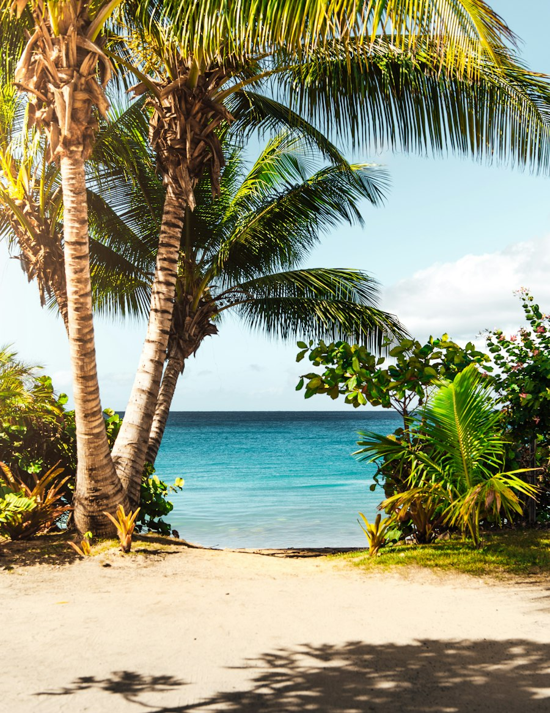
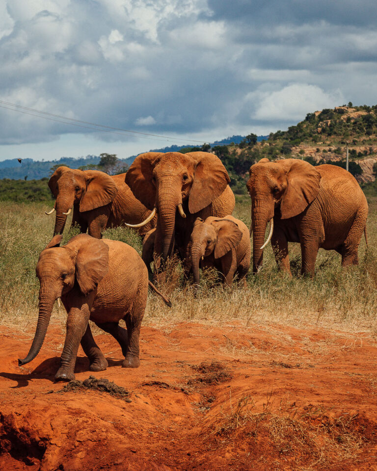
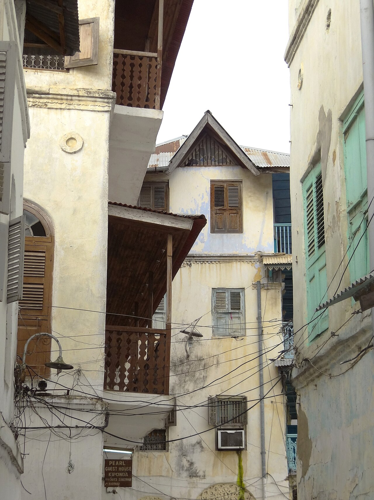

Kenya’s historic coastal city
Mombasa
Discover Fort Jesus, Old Town, Swahili heritage, beaches and oceanfront experiences.
Discover more →Explore coastal escapes, classic safari parks and East African journeys.
Select a destination to explore highlights and enquire about a tailored trip.
Discover Fort Jesus, Old Town, Swahili heritage, beaches and oceanfront experiences.
Discover more →
Relax on palm-fringed beaches and enjoy water sports, dhow trips and romantic escapes.
Discover more →
Explore beautiful beaches, marine experiences and the Watamu coastal atmosphere.
Discover more →
Enjoy a mix of beach time, local culture and coastal sightseeing.
Discover more →
Discover relaxed coastal stays, creek views and a slower pace by the ocean.
Discover more →
Combine city experiences with wildlife attractions and safari journeys.
Discover more →
Experience open plains, game drives and seasonal wildlife spectacles.
Discover more →
Explore open plains, swamps and views of Africa’s highest mountain when skies are clear.
Discover more →
Explore expansive parks, wildlife habitats and memorable safari routes.
Discover more →
Enjoy a day trip or overnight safari in a scenic national park.
Discover more →
Discover rugged landscapes and wildlife adapted to the semi-arid north.
Discover more →
Explore Stone Town, spice heritage and beautiful Indian Ocean beaches.
Discover more →
Plan journeys to Tanzania’s famous parks and coastal destinations.
Discover more →
Explore Uganda’s varied landscapes and tailor-made East African journeys.
Discover more →Tell us what you have in mind and we will prepare a tailored travel proposal.